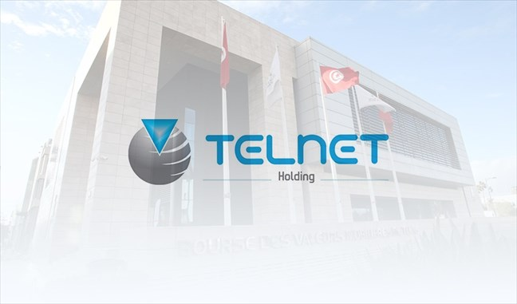

• System Administration at Capgemini: Managed and maintained a network of 100+ computers, ensuring 99.9% uptimeImplemented robust backup and recovery solutions, reducing data loss incidents by 30%.
• Cybersecurity at BIAT Bank: Developed and implemented a comprehensive security policy, reducing the number of security incidents by 40%.
• Vendor Management at Telnet: Negotiated contracts with IT vendors, resulting in a 15% cost reduction for hardware and software procurement.

Projects
üëæ Smart room project: Designed and implemented a Smart Room Automation System to enhance user comfort, energy efficiency,
and overall convenience within a residential or office space.
üëæ LifeFlow application: Developed a mobile application aimed at streamlining and encouraging blood donation processes,
connecting donors with blood banks, and creating a supportive community for potential donors.